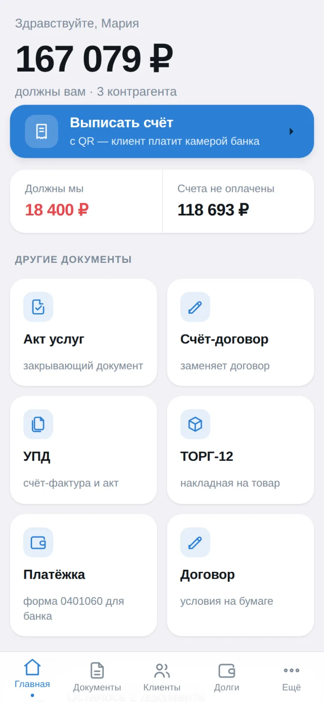
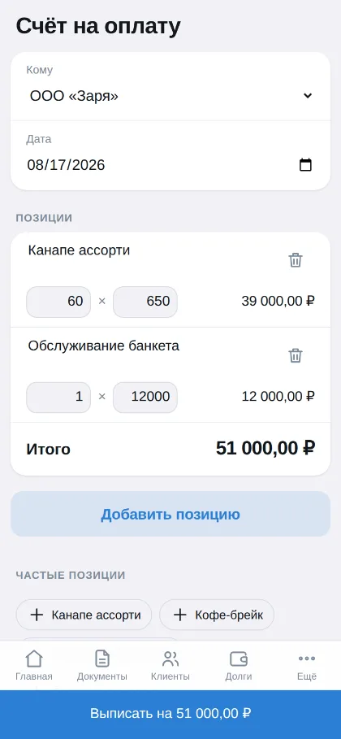
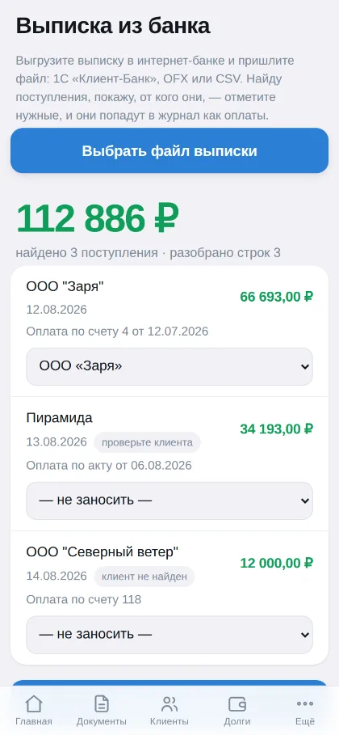
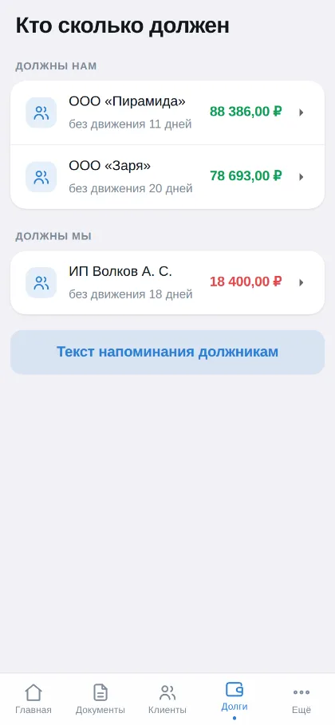
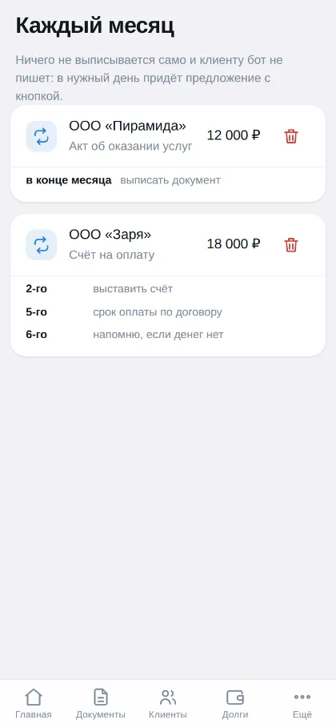
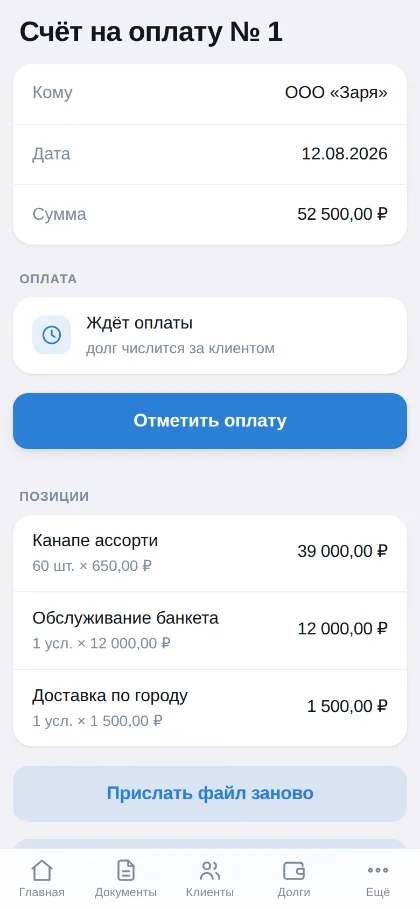

Счета, акты и УПД — в Telegram, за минуту.
Первые 5 документов в месяц — бесплатно. Карта не нужна.

Никакой настройки плана счетов и проводок. Заполняете реквизиты один раз, дальше — только суммы и позиции.
Клиент наводит камеру банка и платит. Код по ГОСТ Р 56042 — если реквизиты неполные, он не рисуется вовсе, чтобы никто не получил ошибку в банке.
УПД в обоих статусах: передаточный документ и счёт-фактура с расчётом НДС по постановлению № 1137. Накладная — для тех, кто передаёт товар.
Счёт и условия сделки на одном листе: оплата считается акцептом оферты по п. 3 ст. 438 ГК РФ. Отдельный договор подписывать не нужно.
Загружаете выгрузку — 1С «Клиент-Банк», OFX или CSV — и видите, кто заплатил. Оплаты сводятся с долгами по ИНН. Повторная загрузка ничего не задваивает.
Назвали число из договора — бот сам предложит выставить счёт заранее, акт в конце месяца, а на следующий день после срока напомнит о просрочке.
Журнал операций и сальдо по каждому клиенту. Акт сверки — готовым Excel с формулами, а не картинкой.
Документ уходит клиенту с вашего адреса, а не с чужого. Входящие бот просматривает сам и показывает письма со счетами и актами.
Снимок подписи и печати ложится на документ сам. На платёжку и договор — никогда: там по закону нужна живая подпись.
Вводите ИНН — название, адрес, КПП и директор подставляются из реестра; по БИК — банк и корреспондентский счёт. Контрольные цифры проверяются.
Ставить нечего: открывается кнопкой в чате с ботом. Тёмная тема подхватывается из мессенджера — снимки ниже меняются вместе с вашей.





Введите ИНН — остальное подставится. Добавьте банк, чтобы в счёте появился QR.
Тоже по ИНН. Реквизиты и почта запомнятся — второй раз вводить не придётся.
Выберите тип, наберите позиции. Файл придёт в чат — отправьте клиенту или сохраните.
Здесь будут настоящие отзывы ваших клиентов. Замените текст и имена —
и уберите пунктирную рамку в стилях .quote.
Попросите отзыв у клиента, который пользуется ботом дольше месяца. Лучше всего работает конкретика: что делал раньше, сколько времени уходило, что изменилось.
Второй отзыв стоит взять у другого типа бизнеса — если первый от арендодателя, то этот от подрядчика или магазина.
Третий — про конкретную возможность: выписку из банка, акт сверки или напоминания о просрочке.
в месяц бесплатно, без карты и без срока. Этого хватает, чтобы понять, подходит ли вам бот.
Ставить ничего не нужно — бот открывается в Telegram, который у вас уже есть.